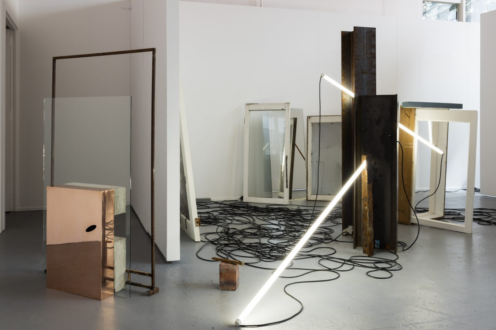
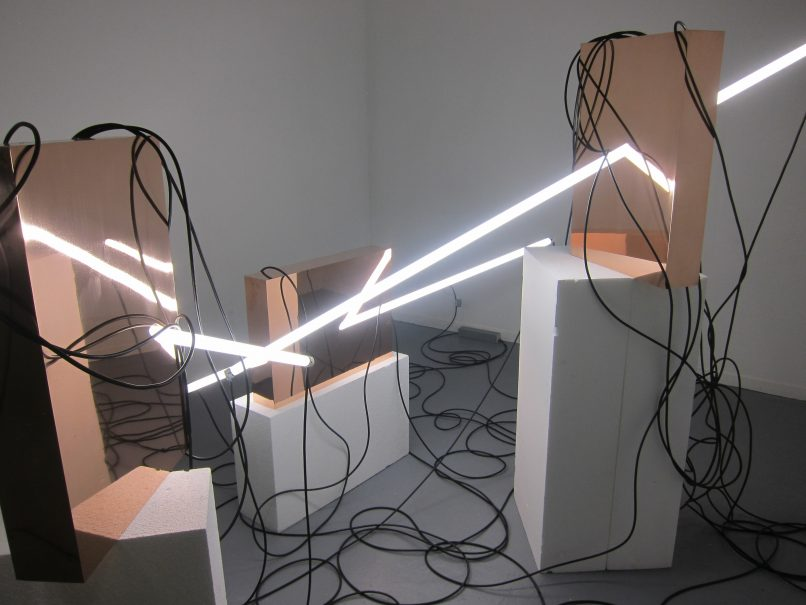
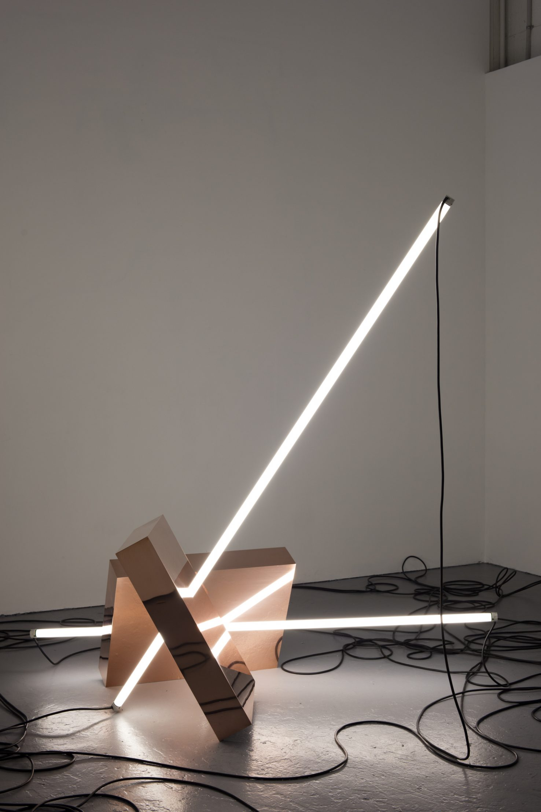
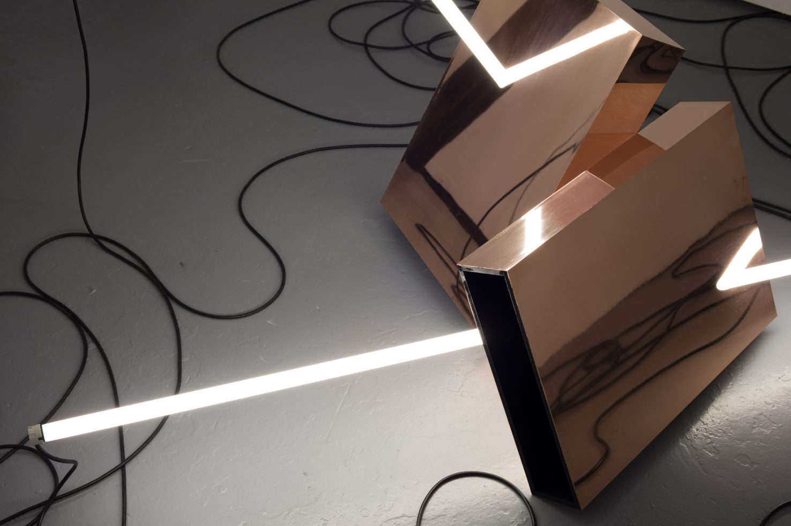
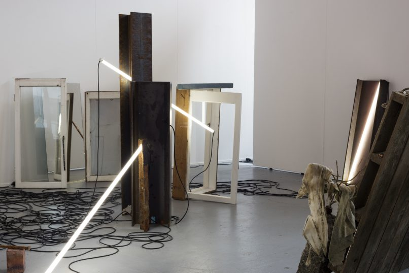

Janet Mackenzie
Information
This collection aims to celebrate what it is to be feminine. Rather than being sexualised and a figure of outward appreciation for others Abbey has focused on expressing personal happiness. Focusing on how dress can be used as a form of external expression of one’s internal personality, showcasing and embracing confidence in femininity in order to provide a sense of equality. Overall communicating that female sexuality is not solely for the gaze of the male.
Abbey is a fashion designer specialising in womenswear. She explores the use of fabric manipulation, technique and colour throughout her collection to question and represent the stereotyped gender binary within society. Celebrating what it means to be feminine has been the main influence behind Abbey’s Hyper-feminine graduate collection.

Joshua Lewis, Song Sting Swarm, 2016 (Spatial)

Lucilla Gray, Hyper-Floralis, 2013 (Fashion)

Jasmine Wiltshier, Locating Oblivion, 2016 (Photography)

Fraser Callaway, Oliver Ward, Co—nnection,

Fraser Callaway, Oliver Ward, Co—nnection, 2014